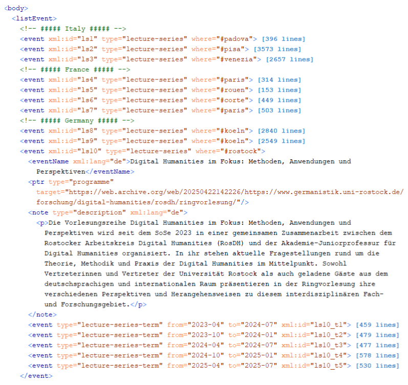
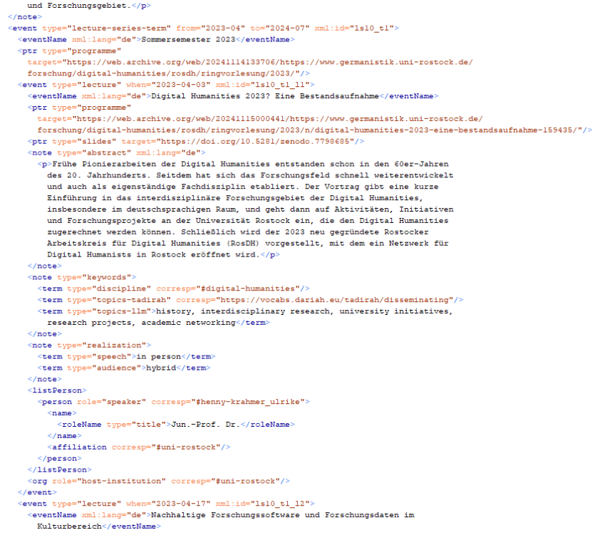
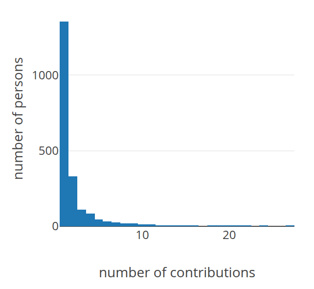
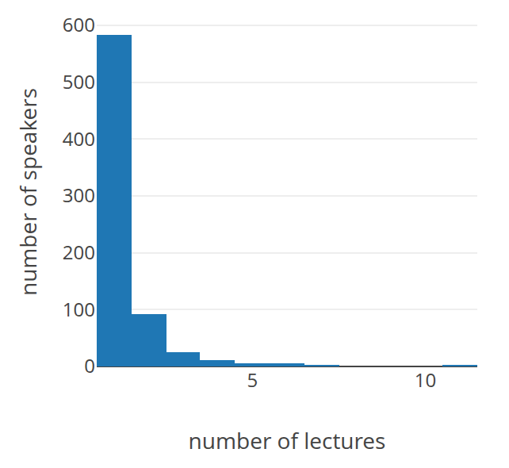
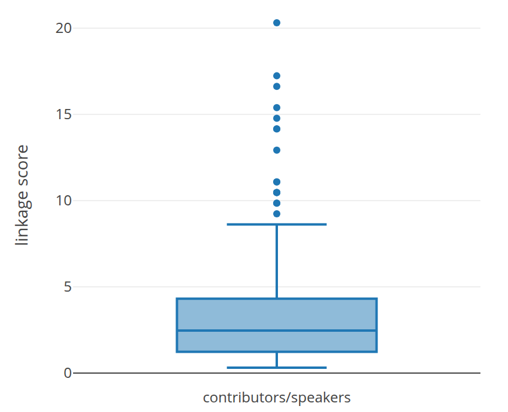
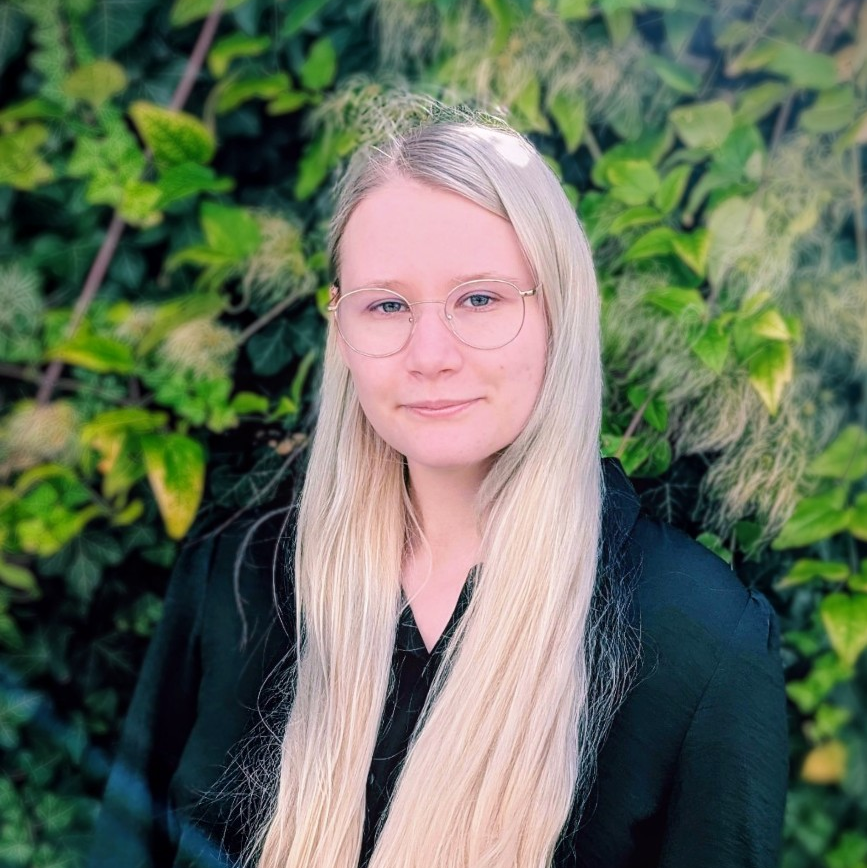

DH as Linked Communities
A Comparison of Participants at Annual Conferences
and in Lecture Series in Germany, Austria, and Switzerland
Introduction
DH communities can be studied through presentation activity
Analyses of DH conference abstracts have become an established way of observing the field (Weingart and Eichmann-Kalwara 2017; Henny-Krahmer and Sahle 2018; Cremer et al. 2024; Haider et al. 2024; Guhr 2025).
- actors and institutions
- thematic orientations
- structural trends
- citation and bibliometric networks (Kirtania 2021; Spinaci et al. 2022)
Each of these approaches captures only one segment of DH as an interdisciplinary research field.
Lecture series add another perspective
Conference data
Public, contribution-based, often collaborative.
Lecture series data
Invitational, often local, connected to institutional contexts.
Our contribution combines DHd conference data with data on DH lecture series in Germany, Austria, and Switzerland.
How are DH communities linked through people?
community
bridge
community
The central aim is to define the overlap between conference contributors and lecture-series speakers, drawing on Patrick Sahle’s model of overlap, bridge, and independent area ("Schnittmenge, Brücke und eigenständiger Bereich”, 2015).
Data
Two datasets, one comparative perspective
DHd conference data
Contributions from 2016–2020 and 2022–2025.
Lecture-series data
30 fully documented DH lecture series.
DHd conference data
- Data were retrieved from DHd’s GitHub organization.
- Included years: 2016–2020 and 2022–2025 (9 conferences in total).
- No TEI/XML or standardized metadata are available for 2014–2015.
- No data are available for 2021.
- Metadata were extracted from CSV and XML files.
- Authors were extracted for each individual contribution.
Lecture-series data
Henny-Krahmer, Ulrike, Fernanda Alvares Freire, and Erik Renz (2025a). Lectures That Link. Software and data. Rostock: Zenodo. DOI: 10.5281/zenodo.15769950
Henny-Krahmer, Ulrike, Fernanda Alvares Freire, and Erik Renz (2025b). "Lectures that Link: Analyzing European Lecture Series as Nodes of Interaction in the Digital Humanities." magazén 6 (2). DOI: 10.30687/mag/2724-3923/2025/02/001

<listEvent> element:
lecture series grouped by country and the beginning of the
Digital Humanities im Fokus structure
(University of Rostock).

Matching people is the central data problem
where available
existing or new
last name, first name
variants and changes
Conference contributors have only been identified via ORCID IDs since 2022, and only when researchers provided this information in ConfTool.
Analysis of Contributions to DH Conferences and Lecture Series
The two formats differ strongly in scale
Multiple authorship is common at conferences, while lecture-series events are usually delivered by a single speaker.
Most people appear only once
DHd conferences
64% of contributors are involved in one contribution. 16% of contributors are involved in two contributions. The observed maximum is 27 contributions by one person.
Lecture series
81% of speakers deliver one lecture. 13% of speakers deliver two lectures. The observed maximum is eleven lectures by one person.
Multiple participation is somewhat more pronounced in the conference context, but the overall distribution patterns are broadly comparable.


How strongly are the two subcommunities linked?
of DHd contributors do not appear as speakers in the lecture-series dataset.
people are visible in both contexts.
of lecture-series speakers have not contributed to a DHd conference.
A linkage score describes relative emphasis
Values above 1
stronger relative focus on conference contributions
Values approaching 0
stronger relative emphasis on lecture-series presentations
For the 277 people represented in both datasets, the median linkage score is 2.5.

Conclusions and Outlook
Lecture series may reveal parts of DH beyond conferences
The different participation patterns may reflect the different social forms of the two formats.
- conference contributions are self-submitted
- lecture-series talks are usually invited
- doctoral researchers may be especially visible at conferences
- lecture series may activate local actors
Lecture series may function as points of connection between DH and other humanities communities at local institutions.
DH appears as both linked and autonomous subcommunities
By consolidating conference and lecture-series data, we can observe actors who are active in both settings, while also seeing separate groups that currently appear only in one context. Linking additional datasets is valuable: conference data alone show only one facet of DH communities.
Further work
- diachronic analysis of changing participation patterns
- integration of institutional affiliations and locations
- analysis of collaborative constellations
- gender-related analysis of speakers and contributors
- further authority-data enrichment
- continued documentation of lecture series
Thank you for contributing!
